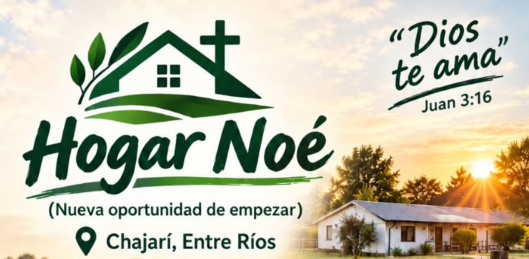

🤝 Convivencia
Promovemos el respeto, el orden, las responsabilidades compartidas y el cumplimiento de las normas de convivencia.
HOGAR NOÉ
Una nueva oportunidad de empezar

CHAJARÍ · ENTRE RÍOS
Un espacio de convivencia, acompañamiento, trabajo y crecimiento espiritual.
Comunicate con nosotros Conocé nuestro programaCreemos que cada persona merece la oportunidad de comenzar una nueva etapa. Promovemos la convivencia, la responsabilidad, el trabajo cotidiano y la búsqueda de Dios.
Nuestro propósito es acompañar a las personas en un camino de cambio y crecimiento.
En Hogar Noé acompañamos a las personas que buscan una nueva oportunidad para reconstruir sus vidas, en un entorno de convivencia, responsabilidad y fe.
Promovemos el respeto, el orden, las responsabilidades compartidas y el cumplimiento de las normas de convivencia.
Compartimos tiempos de oración, lectura bíblica, estudio de la Palabra y reuniones cristianas.
Fomentamos las tareas cotidianas, la higiene personal, el cuidado de los espacios y el desarrollo de hábitos saludables.
Mantenemos el contacto con las familias y coordinamos las entrevistas para conocer cada situación.
Para conocer las condiciones de ingreso y las opciones de acompañamiento, comunicate con nosotros.
Consultar por el programaComunicate con nosotros para consultar por el programa y las entrevistas de ingreso.
Hogar Noé
Chajarí, Entre Ríos
Consultar por WhatsApp